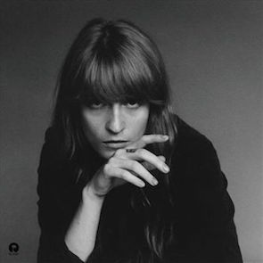
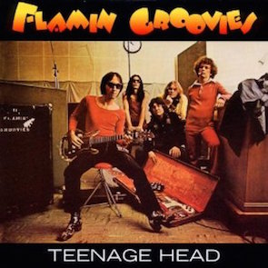

REVIEW
Florence + The Machine
How Big, How Blue, How Beautiful

Jim and Greg review the new introspective album from UK stadium rocker Florence + The Machine.
|
DESERT ISLAND JUKEBOX
Flamin' Groovies
"Teenage Head"

Greg nominates a pure three-minute distillation of teen angst from the band that had a song about sniffing glue years before The Ramones.
|